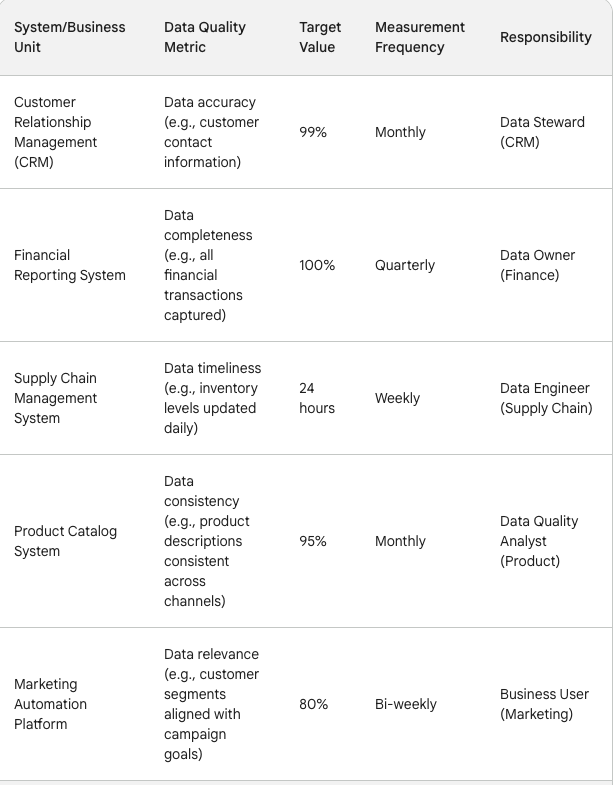
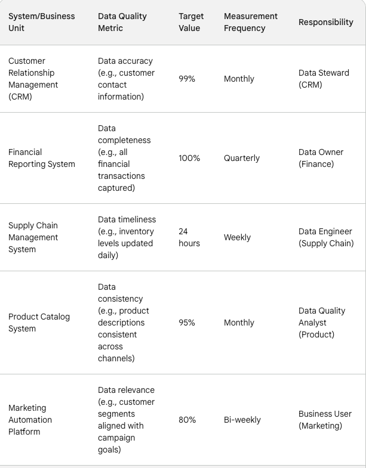

Is your data a polluted swamp or a crystal-clear stream?
Dirty data plagues even the best organizations. Imagine marketing campaigns targeting the wrong age group, missed sales due to missing details, or product launches delayed by incompatible information or even getting sued. Yikes!
Fear not, CDTO superheroes! This article equips you with the knowledge and tools to transform your data into a sparkling oasis. ✨
Dive into:
Eye-opening examples of real-life data contamination (think: date format disasters and duplicate debacles).
20 powerful ways to cleanse your data, from automation to AI-powered solutions.
Clear roadmaps for demarcating responsibility: who owns what in the data quality game? (Hint: it's a team effort!)
Ready to become a data cleansing champion? Let's turn that murky mess into a strategic asset that fuels informed decisions and propels your organization forward!
The analogy of the water filtration plant provided by Ajay Dawar is so apt. The CDTO/CDO team owns the "filtration plant" - the processes and tools for data cleansing. However, they can't control the "source water" - the data coming from various systems and users.
Data Contamination Types with Real-Life Examples:
1. Inconsistent Formats:
Dates: Marketing campaign targeting the wrong age group due to USA vs. India date format (e.g., 02/08/2024 vs. 08/02/2024).
Currencies: Financial reports showing incorrect totals due to mixed currency symbols (€ vs. $).
Units: Inventory mismanagement caused by product dimensions stored in meters and feet, leading to inaccurate calculations.
2. Missing or Incomplete Data:
Customer profiles: Missed sales opportunities because of incomplete contact details (e.g., missing phone number).
Scientific datasets: Research skewed due to missing data points in experiments.
Financial records: Fraudulent activity enabled by missing transaction details or timestamps.
3. Duplicates and Redundancies:
Product listings: Double-counting inventory due to duplicate product entries with different IDs.
Customer records: Sending multiple marketing emails to the same person due to duplicate entries.
Medical records: Errors in patient care due to redundant or conflicting information across different systems.
4. Incorrect or Outdated Data:
Product descriptions: Customer dissatisfaction due to outdated product information on the website.
Employee records: Payroll errors caused by inaccurate salary data.
Financial statements: Misleading reports due to outdated financial figures.
5. Data Entry Errors:
Typos: Incorrect product names or addresses leading to lost deliveries.
Misinterpretation: Data misclassified due to human error, impacting analysis.
Data entry fatigue: Errors increasing with large datasets, leading to inaccurate results.
6. System Integration Issues:
Incompatible data formats: Product launch delayed because different departments use incompatible data structures.
Data loss during transfer: Incomplete datasets hindering analysis due to errors during system integration.
Data mapping errors: Incorrect linking of data points leading to inaccurate relationships.
7. Data Security Breaches:
Customer data leaks: Identity theft and financial losses due to compromised customer information.
Sensitive data exposure: Competitive disadvantage or legal repercussions due to leaked confidential information.
Data manipulation: Altered data impacting decision-making and causing financial losses.
8. Sensor and Measurement Errors:
Faulty sensors: Incorrect environmental readings leading to inefficient resource management.
Calibration issues: Inaccurate medical device readings impacting patient diagnosis and treatment.
Data transmission errors: Incomplete or corrupted data from sensors hindering analysis.
9. External Data Source Issues:
Third-party data inaccuracies: Marketing campaigns targeting wrong demographics due to inaccurate purchased data.
Crowdsourced data bias: Biased results from online surveys impacting research conclusions.
Outdated public data: Incorrect policy decisions based on outdated government statistics.
10. Algorithmic Bias:
Loan applications rejected: Discrimination due to biased algorithms used for credit scoring.
Facial recognition errors: Incorrect identification of individuals due to biased algorithms based on race or gender.
Algorithmic amplification: Reinforcing existing societal inequalities through biased algorithms in social media platforms.
20 Powerful Tools for Data Cleansing:
Data profiling: Analyze patterns, identify anomalies, and understand data characteristics.
Data standardization: Define formats, ranges, and rules for consistent data representation.
Data deduplication: Utilize algorithms and matching techniques to eliminate duplicate entries.
Data validation: Set rules and checks to ensure data adheres to defined standards.
Data scrubbing: Automate error detection and correction based on pre-defined rules.
Data imputation: Estimate missing values based on statistical methods or historical data.
Data cleansing tools: Leverage specialized software to automate common cleansing tasks.
Master data management (MDM): Establish a central repository for consistent data definitions and governance.
Data lineage tracking: Track the origin and transformation of data to identify contamination sources.
Data quality monitoring: Continuously assess data quality and identify potential issues.
Data governance framework: Define policies, procedures, and roles for data quality management.
Data literacy training: Educate users on data quality practices and identification of red flags.
Collaboration with data owners: Partner with business units to understand and address their data needs.
Data quality metrics: Track progress and measure the effectiveness of cleansing efforts.
Data quality standards: Implement industry-specific data quality benchmarks for your organization.
Data quality champions: Appoint individuals responsible for promoting and advocating for data quality.
Incentivize data quality: Recognize and reward teams and individuals who contribute to good data practices.
Continuous improvement: Regularly evaluate and refine data cleansing processes based on new insights.
Invest in data quality tools and resources: Allocate budget and personnel to support data cleansing efforts.
Build a data quality culture: Foster an organizational culture that values and prioritizes data quality.
Data Cleansing Tools for Each Strategy:
1. Standardization:
OpenRefine (formerly Google Refine): Open-source tool for data cleaning and transformation.
Trifacta Wrangler: Powerful data wrangling platform for various standardization tasks.
Informatica Data Integration Hub: Enterprise-grade platform for data integration and standardization.
2. Data Validation:
Talend Open Studio: Open-source data integration platform with built-in validation rules.
Azure Data Factory: Cloud-based platform offering data validation capabilities.
Informatica PowerCenter: Enterprise-grade data integration solution with data validation features.
3. Deduplication:
Dedupe: Open-source tool for record matching and deduplication.
Collibra DQ: Enterprise-grade data quality platform with deduplication capabilities.
Informatica Data Quality: Comprehensive data quality solution with deduplication features.
4. Data Profiling:
Data Profiling tools within data integration platforms like Talend Open Studio, Azure Data Factory.
IBM InfoSphere Optim Data Quality: Enterprise-grade data quality platform with profiling features.
Data profiling tools within data warehousing platforms like Snowflake, Amazon Redshift.
5. Data Matching:
OpenRefine (formerly Google Refine): Can be used for basic data matching.
Experian Data Quality: Provides data matching solutions for various industries.
Dun & Bradstreet D-U-N-S Match: Matches business entities across different data sources.
Informatica Data Quality: Offers various data matching algorithms.
6. Data Enrichment:
Google Cloud Dataflow: Stream processing platform for data enrichment with external sources.
Clearbit Enrichment: API platform for enriching customer data with additional information.
Informatica Data Integration Hub: Can be used for data enrichment tasks.
7. Data Governance:
Collibra Data Governance: Cloud-based platform for data governance and compliance.
Informatica Enterprise Data Catalog: Enterprise-grade data catalog for data governance.
Open-source data governance frameworks like Open Data Platform (ODP).
8. Data Lineage Tracking:
Apache Airflow: Open-source workflow management platform for data lineage tracking.
Azure Data Factory: Offers data lineage tracking capabilities.
Informatica Data Integration Hub: Can be used for data lineage tracking.
9. Data Quality Tools:
Pentaho Data Integration: Open-source data integration platform with data quality features.
Informatica Data Quality: Comprehensive data quality solution with various tools.
IBM InfoSphere Optim Data Quality: Enterprise-grade data quality platform with diverse tools.
10. Version Control:
Data version control features within data warehousing platforms like Snowflake, Amazon Redshift.
Git Large File Storage (LFS) for managing large data files.
Cloud-based data version control solutions like Collibra Data Governance Center.
Sharing the Responsibility: Data Ownership and Governance
 Ownership and Responsibility Matrix
Ownership and Responsibility MatrixData Ownership Matrix
 Data Ownership Matrix
Data Ownership MatrixService-Level Agreements (SLAs): Data Quality Standards
 SLAs
SLAs SLAsSLAs
SLAsSLAsAdditional Resources for Data Cleansing:
General Resources:
Dataversity: https://www.dataversity.net/
Informatica Data Quality Blog: https://www.informatica.com/blogs.html
Talend Data Quality Blog: https://www.talend.com/products/data-quality/
IBM Data Quality Blog: https://www.ibm.com/blog/tag/data-quality/
Cloudera Data Quality Documentation: https://www.cloudera.com/products/cloudera-data-platform.html
Specific Tools:
OpenRefine: https://openrefine.org/docs/manual/running - Free and open-source data cleaning tool.
Talend Open Studio: https://help.talend.com/r/en-US/8.0/open-studio-user-guide - Open-source data integration platform with data validation features.
Trifacta Wrangler: https://docs.trifacta.com/display/HOME/Introduction+to+Data+Wrangling - Interactive data cleaning tool with powerful deduplication capabilities.
Experian Data Quality: https://www.experian.com/data-quality/ - Provides data matching and cleansing solutions for various industries.
RapidMiner: https://altair.com/altair-rapidminer - Open-source data mining platform with data profiling tools.
Alteryx Designer: https://community.alteryx.com/ - Data analytics platform with data lineage tracking capabilities.
Dun & Bradstreet D-U-N-S Match: https://www.dnb.com/
Google Cloud Dataflow: https://cloud.google.com/dataflow
Clearbit Enrichment: https://clearbit.com/
Informatica Data Governance: https://www.informatica.com/products/data-governance.html
Collibra Data Governance Platform: https://www.collibra.com/us/en/products/data-governance
Alteryx Designer: https://community.alteryx.com/
Lineage Software: https://solutionsreview.com/data-management/the-best-data-lineage-tools-and-software/
Data.com Clean: https://help.salesforce.com/s/articleView?id=sf.jigsaw_int_user_faq.htm&language=en_US&type=5
Additional Articles and Guides:
Data Cleaning Techniques for Better Data Analysis: https://www.ibm.com/docs/en/cognos-analytics/11.1.0?topic=metadata-cleaning-data
7 Best Data Cleaning Tools for Analysts in 2023: https://www.akkio.com/post/data-cleaning-and-preparation
Top 10 Data Cleansing Tools for 2024: https://careerfoundry.com/en/blog/data-analytics/best-data-cleaning-tools/
The 7 Best Data Cleaning Tools for Analysts [Pros and Cons]: https://careerfoundry.com/
Data Cleansing Best Practices: https://www.youtube.com/watch?v=NHitnBpeGi0